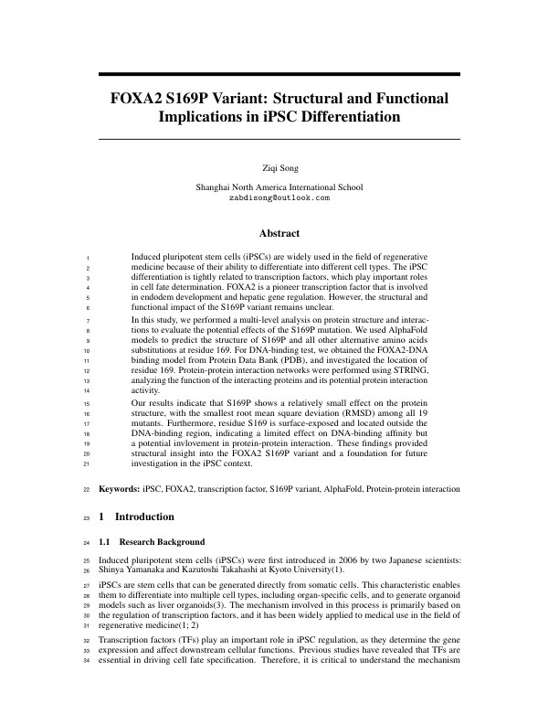
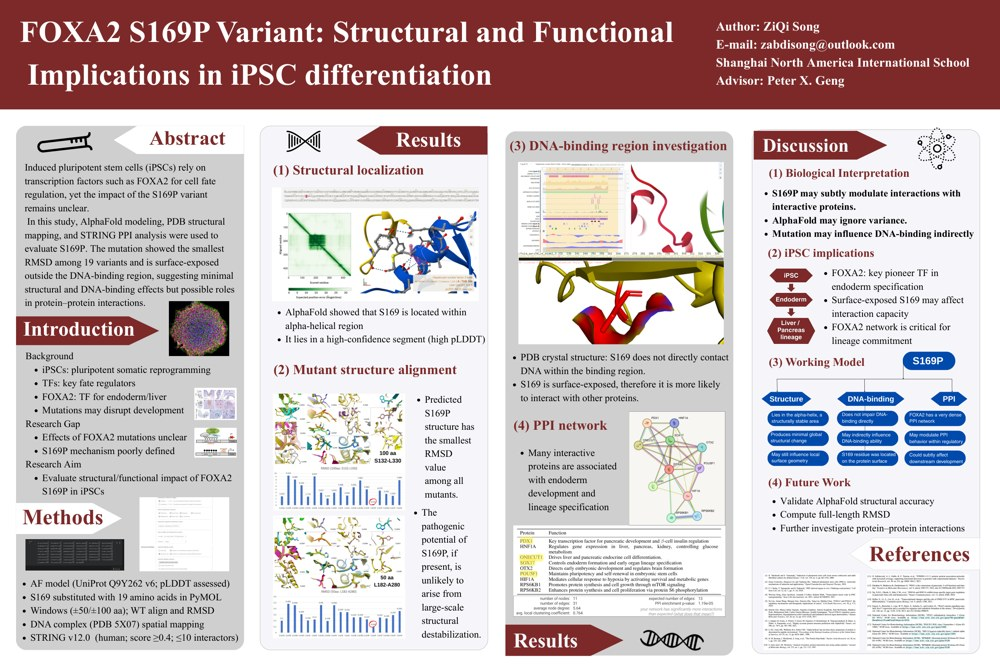
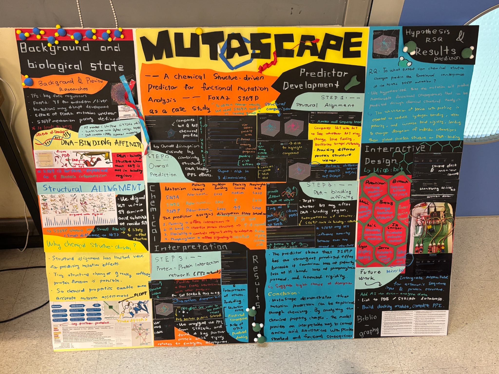
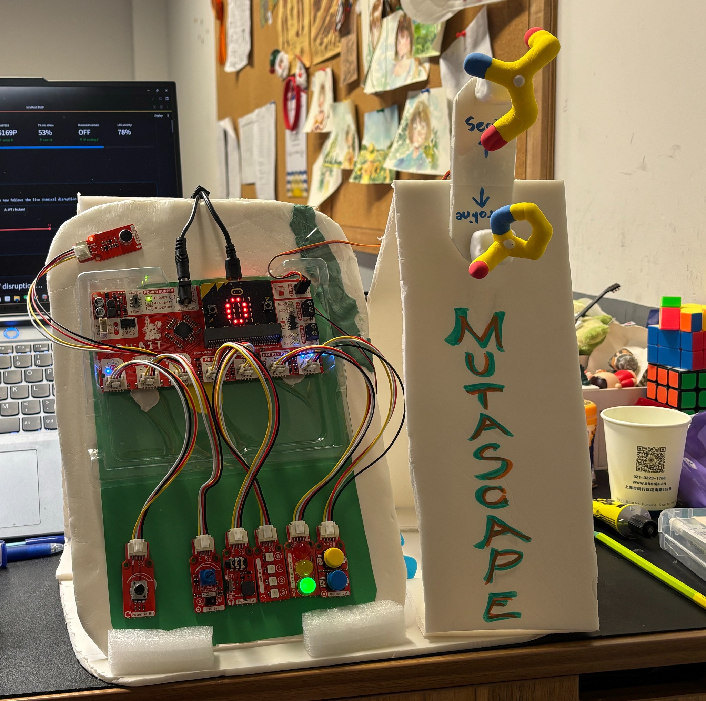

CHEMISTRY
A change at the side chain
Serine has a polar hydroxyl group. Proline also constrains backbone geometry. Chemical differences motivate experiments; they do not establish a functional outcome.
Explore FOXA2 from local chemistry to DNA geometry and developmental associations. Then bring the question onto an interactive pressure board.
Start with structure ↗Serine has a polar hydroxyl group. Proline also constrains backbone geometry. Chemical differences motivate experiments; they do not establish a functional outcome.
Sequence context, predicted structures, DNA-bound geometry and STRING associations.
Rotate actual coordinates, compare fitting windows and trace the source materials.
Use buttons, a knob, environmental input and light feedback to explore a transparent rule system.
A rigid alignment of supplied FOXA2 coordinates, with the fitting region made explicit.
Drag to rotate · scroll or pinch to zoom · click an atom for its identity. These are predicted models, not a time-resolved animation.
The original paper reports 0.321 Å for 132–330 and 0.097 Å for 182–280. Those values have not been reproduced with the supplied files under the Cα method used here. PyMOL selections, outlier rejection and original model versions are needed for an equivalent comparison.
The supplied 5X07-derived complex contains DNA chains D/E and protein chain F.
Author residue 231 = label residue 77 in this exported protein chain. The structure has no mutant bound to DNA.
Heavy atoms only. Coordinates retain the supplied positions; no distance-based bonds have been added between protein and DNA.
Select an association from the prototype, then inspect the partner's separate structure.
The original report describes 11 nodes / 31 edges from STRING. Its complete edge table was not supplied. This view preserves the four named connections in the prototype without inventing the remaining edges.
Open current STRING network ↗A browser version of the exhibition board, with every scoring rule visible.
Environmental input may represent knob/microphone intensity in the exhibition; it is not a calibrated measure of cellular stress. The servo image does not move a physical motor.
Original materials, supplied models and source files in one place.

Computational exploration of structural and functional implications in iPSC differentiation.
Read original PDF ↗
The original scientific poster, separate from the later interactive exhibition board.
View original poster ↗The supplied PDF export of the slides; an editable PPTX was not included.
Read slides ↗

Published functional experiments belong to the cited researchers. No project-specific wet-lab iPSC measurements or docking results were supplied.